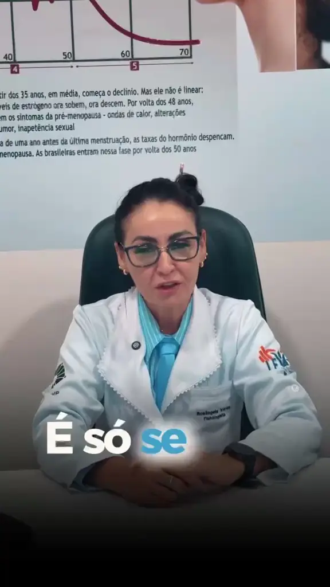
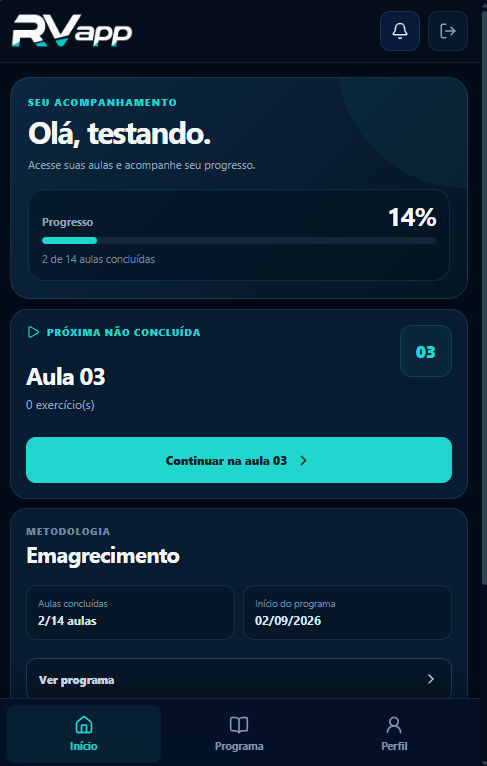

AvaliarEntender seu ponto de partida.
RV FISIOLOGIA • ROSANGELA VARAS
Treino feito para você. Evolução acompanhada de perto.
Avaliação, estratégia individual e ajustes ao longo do processo. Um acompanhamento pensado para caber na sua rotina — presencialmente em Atibaia e, quando necessário, com apoio digital.
Atendimento individual
Atibaia • SP
Suporte pelo RV App

Resultados individuais variam. Estratégias são definidas conforme avaliação, rotina, condições atuais e evolução de cada pessoa.
PlanejarOrganizar uma estratégia possível.
AcompanharObservar, ajustar e progredir.
ConectarUsar tecnologia sem perder o cuidado humano.
O MÉTODO
O plano precisa funcionar na sua vida, não só no papel.
O acompanhamento começa entendendo seu objetivo, rotina, histórico e momento atual. A partir disso, o treino deixa de ser uma ficha genérica e passa a fazer parte de um processo com direção.
Quero entender meu casoAvaliação individual
Leitura do ponto de partida e do contexto real antes de definir qualquer estratégia.
Planejamento executável
Frequência, organização e progressão pensadas para o que você consegue sustentar.
Ajustes ao longo do caminho
O plano acompanha sua resposta, suas dificuldades e sua evolução — não o contrário.
COMO FUNCIONA
Um processo claro do primeiro contato à evolução.
Sem excesso de etapas e sem informação solta: cada momento prepara a próxima decisão.
- 01
Avaliação
Objetivo, rotina, histórico e ponto de partida.
- 02
Planejamento
Estruturação do treino e definição da estratégia.
- 03
Execução
Treino orientado e acompanhamento da rotina.
- 04
Reavaliação
Leitura da evolução e definição dos próximos ajustes.
MAIS QUE UMA FICHA
O valor está no acompanhamento.
Treino é parte da entrega. O diferencial é conectar informação, estratégia, execução e evolução em um processo único.
Estratégia individual
Uma proposta construída para o seu objetivo e para a realidade que você consegue sustentar.
Progressão acompanhada
Ajustes de acordo com resposta, execução e evolução.
Informação organizada
Histórico, treinos e avaliações com contexto.
Rotina possível
Planejamento que considera tempo e disponibilidade.
Orientação próxima
Dúvidas e dificuldades fazem parte dos ajustes.
EVOLUÇÕES REAIS
Resultados diferentes. Processos individuais.
Casos compartilhados pela equipe. Eles mostram possibilidades de evolução e não representam promessa de prazo, peso ou resultado para outras pessoas.
 10 kgresultado informado
10 kgresultado informadoCASO REAL
10 kg eliminados
Evolução construída com constância, estratégia e acompanhamento dentro da realidade desta pessoa.
 55 kgresultado informado
55 kgresultado informadoCASO REAL
55 kg eliminados
Resultado individual expressivo que não deve ser usado como meta ou prazo obrigatório para outras pessoas.
Resultados individuais variam.Organismo, rotina, condições de saúde, adesão e tempo de acompanhamento influenciam a evolução.

TECNOLOGIA A SERVIÇO DO ACOMPANHAMENTOO acompanhamento continua mesmo quando você não está no presencial.
O RV App organiza treinos, conteúdos, avaliações e progresso. A plataforma amplia o acesso à informação, mas a estratégia continua sendo conduzida pela Rosangela.

Treinos em um só lugar
O aluno acessa sua rotina sem depender de mensagens espalhadas.
Histórico e progresso
A evolução fica organizada para consulta ao longo do acompanhamento.
Visão profissional
Informações relevantes ficam disponíveis para orientar decisões e ajustes.
EM DESENVOLVIMENTO
RV APP + APPLE WATCH
Mais contexto do treino, direto do pulso.
A próxima etapa prevista é conectar métricas compatíveis do Apple Watch ao histórico do aluno, mediante autorização e compatibilidade do dispositivo.
♥ Frequência cardíaca◷ Duração↗ Atividade▥ Histórico
Recurso futuro. Dados de dispositivos não substituem avaliação profissional ou orientação médica.
RV FISIOLOGIARosangela Varas
QUEM CONDUZ O PROCESSO
Rosangela Varas
Acompanhamento próximo, individual e organizado para quem precisa de estratégia — não de mais uma solução genérica.
A proposta da RV Fisiologia é transformar avaliação e contexto em decisões práticas para o treino. O presencial em Atibaia pode ser complementado pelo RV App quando isso fizer sentido para a rotina do aluno.
A tecnologia entra como apoio. A condução continua humana, individual e baseada na evolução de cada pessoa.
Conhecer o acompanhamentoCONTEÚDO RV FISIOLOGIA
Informação também faz parte do processo.
Conteúdos educativos ajudam a entender por que saúde, condicionamento e evolução não podem ser resumidos a um único número.
- ✓ Informação profissional e educativa.
- ✓ Contexto além do número da balança.
- ✓ Conteúdo que não substitui avaliação individual.
DÚVIDAS FREQUENTES
Informação clara antes de decidir.
Os detalhes do formato ideal são definidos conforme objetivo, rotina e necessidade de cada pessoa.
Não. Há atendimento presencial em Atibaia e o RV App pode apoiar o acompanhamento a distância, conforme o formato definido.
Não. O aplicativo organiza a experiência. Estratégia, ajustes e decisões continuam ligados ao acompanhamento profissional.
Ainda não. A integração está apresentada como uma evolução em desenvolvimento do RV App.
Não. São exemplos reais de processos individuais. Resultados variam e não representam promessa de prazo ou resultado específico.
CONTATO
Comece explicando o seu objetivo.
Converse sobre sua rotina, objetivo e disponibilidade. A partir daí é possível entender qual formato de acompanhamento faz mais sentido.
- (11) 99123-4513
- Atendimento
- Atibaia — SP
- Endereço
- Alameda Prof. Lucas Nogueira Garcez, 1195
Vila Thaís — Atibaia/SP - @rvfisiologia
⌖
Atibaia — SPO mapa será carregado somente quando você solicitar.
PRÓXIMO PASSO
Seu objetivo merece um plano com contexto.
Converse com a Rosangela e entenda como o acompanhamento pode ser estruturado para a sua rotina.